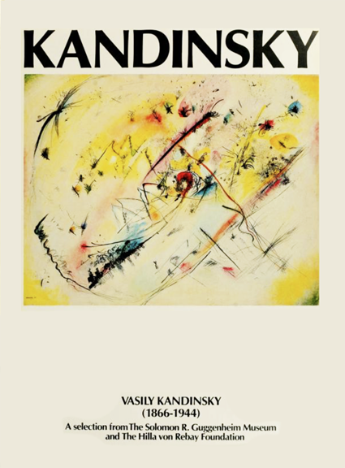
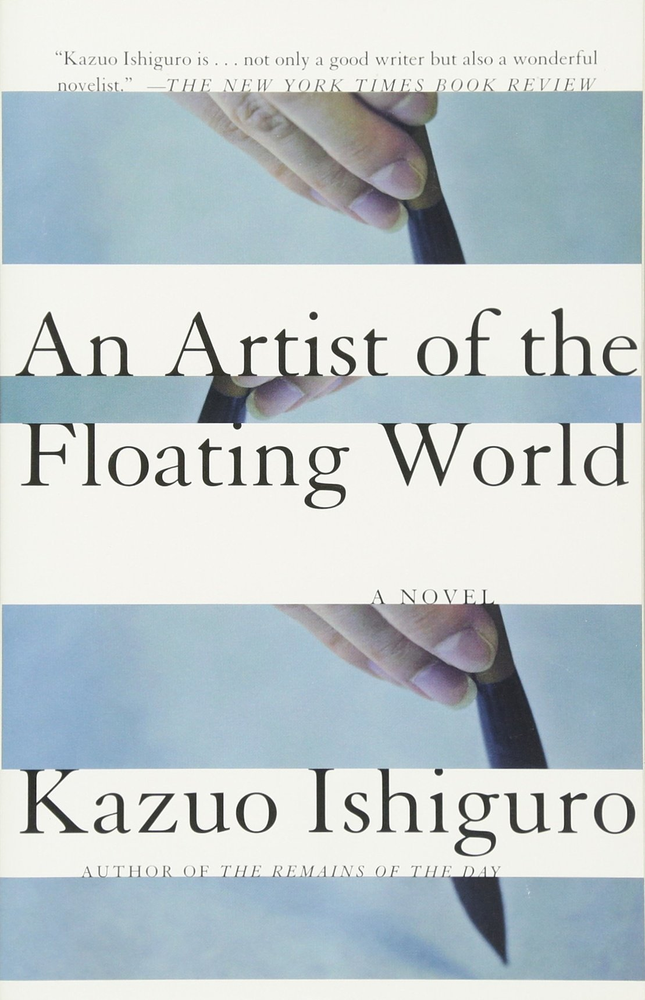
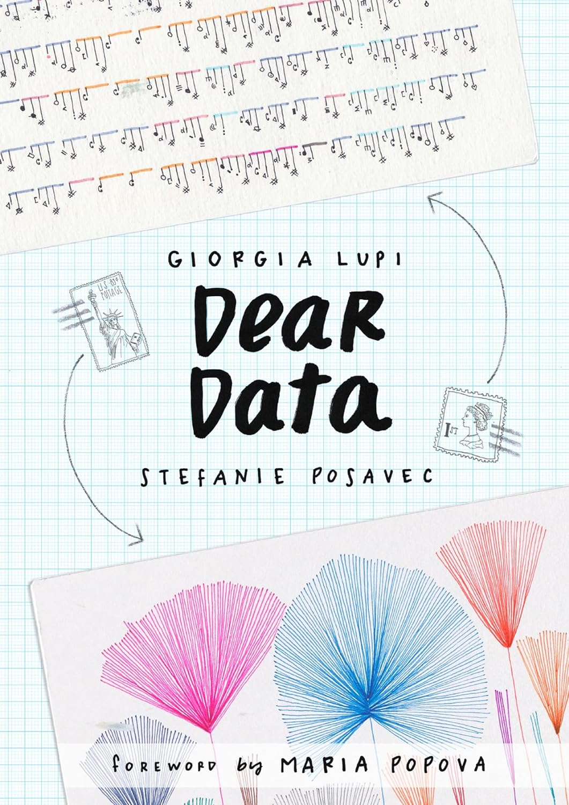

One of my favourite foods is sushi, I love serving it on an arranged platter, with a variety of rolls and sashimi that showcase different textures and flavors. Eating it is all about savoring the delicate balance of fresh fish, seasoned rice, and the tangy kick of wasabi and soy sauce. Whether it's a casual meal or a special occasion, sushi can always be a fun choice.
| Name of the book | Book Cover | Author | Summary |
|---|---|---|---|
| The Politics of Collecting: Race and the Aestheticization of Property | |
Eunsong Kim | Eunsong Kim's "The Politics of Collecting" explores how collecting practices intersect with issues of power, identity, and representation, emphasizing how these practices can both challenge and reinforce existing social hierarchies. Kim examines how collections function as sites of political and cultural negotiation, shaping and reflecting broader societal dynamics. |
| Point and Line to Plane |  | Wassily Kandinsky | In "Point and Line to Plane," Wassily Kandinsky, a pioneering figure in abstract art and a key member of the Bauhaus movement, examines the fundamental elements of art - points, lines, and planes - and their potential to convey emotion and meaning through abstract compositions. He explores how these basic forms can be combined and manipulated to create dynamic visual experiences that transcend traditional representational art. |
| An Artist of the Floating World |  | Kazuo Ishiguro | In "Point and Line to Plane," Wassily Kandinsky, a pioneering figure in abstract art and a key member of the Bauhaus movement, examines the fundamental elements of art - points, lines, and planes - and their potential to convey emotion and meaning through abstract compositions. He explores how these basic forms can be combined and manipulated to create dynamic visual experiences that transcend traditional representational art. |
| Dear Data |  | Giorgia Lupi, Stefanie Posavec | Dear Data is a visual correspondence between data designers Giorgia Lupi and Stefanie Posavec, where each week they choose a personal theme and collect data about their lives. The book creatively illustrates how they transformed this data into beautiful hand-drawn visualizations, blending art and information to explore the nuances of everyday experiences. |